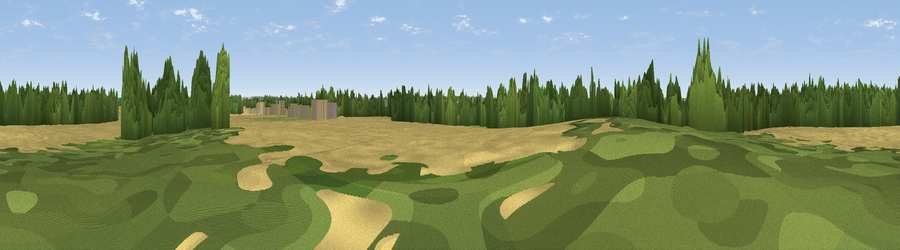

Viewpoint near South Scarle
#44054 in England · top 90% of its area beats it · near South ScarleWhere it is
The exact computed spot (SK 86418 64685). Click the marker for map links.
The view, rendered

A 360° render of this exact spot computed from the terrain model, tree cover and land cover — summer colours, afternoon light, calibrated against photographs of famous viewpoints. Real trees, hedges and buildings will differ in detail.
The panorama
Grey silhouette: terrain skyline in each direction (720 bearings, Earth curvature and refraction included). Dashed green: skyline with trees (+15 m) and buildings (+8 m) as obstacles. Blue strip: how far the ground is visible on each bearing.
Where the view opens
Wedge length = distance to the farthest visible ground on that bearing (vegetation-aware). Rings at 10, 25 and 50 km.
What fills the view
66% cropland · 20% woodland · 13% grassland · 1% built-up
Angular shares of the visible panorama (visual magnitude), not map area. Landscape diversity 0.40 (0–1 Shannon).
Key numbers
More beautiful places nearby
The staircase of upgrades: each row has a higher view potential than everything closer. Driving times are estimates from straight-line distance, calibrated against real road routing — check an actual route before setting out.
| Place | Direction | Drive | Score |
|---|---|---|---|
| Slacks Hill | NNE · 2 km | ~5 min | 45.8 |
| Viewpoint near North Clifton | NNW · 10 km | ~19 min | 51.6 |
| Viewpoint near Bracebridge | ENE · 12 km | ~22 min | 51.8 |
| Viewpoint near Lincoln | ENE · 13 km | ~24 min | 54.0 |
| Lincoln Castle | ENE · 13 km | ~24 min | 54.5 |
| Viewpoint near Burton-by-Lincoln | NE · 14 km | ~26 min | 54.9 |
| Willoughby Hill | WNW · 17 km | ~30 min | 59.0 |
| Burstheart Hill [Thoresby Colliery] | W · 23 km | ~38 min | 69.3 |
53.17227, -0.70862 · source: osm peak · position refined by local search. Computed location — check access rights before visiting.